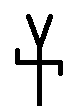

28
Sábado
Canal Sur Televisión
(17:30)
La Línea de la Concepción
(Cádiz)
Final de la XI Competición Provincial
de Escuelas Taurinas de Cádiz
Novillos de
Cebada Gago
Procedencia D. Carlos Núñez,
Jandilla y Torrestrella
Novillos de
El Torero
Procedencia D. Juan Pedro Domecq
y Núñez de Villavicencio

Novillos de
Torres Gallego
Procedencia Núñez del Cuvillos
Guillermo Corbacho
Antonio Santana
Isaac Galvín
Miguel Vázquez
Juan Jesús
Rodríguez
Ángel Pérez
2 añojos de
Cebada Gago
Procedencia D. Carlos Núñez,
Jandilla y Torrestrella
Adrián Guillén
Paco Rivera
 Canal Sur Televisión Canal Sur Televisión
Canal Sur Televisión Canal Sur Televisión 
 Novillos de
Novillos de  Novillos de2 añojos de
Novillos de2 añojos de